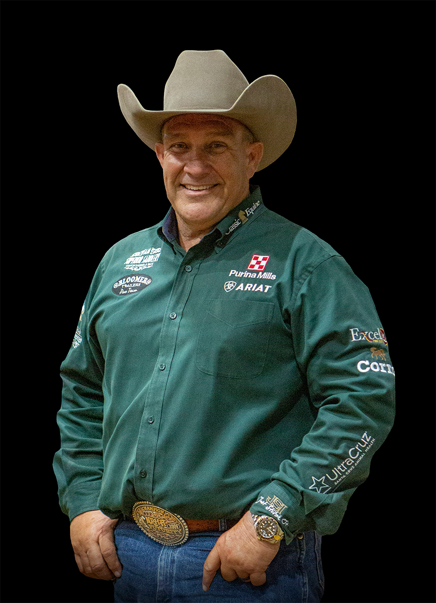

NRHA Hall of Fame | $7M+ Earner | 5× Futurity Champion
Shawn Flarida is the gold standard of professional reining — the rider against whom every generation measures itself. From Springfield, Ohio, he grew up in a family steeped in horsemanship. His father Bill had a sharp eye and a love for horses, and his older brother Mike won two NRHA Open Futurity Championships before being inducted into the NRHA Hall of Fame in 2010. Shawn, ever competitive, set out to surpass even that bar.
He turned professional in the late 1980s after showing as a non-pro throughout his school years. His first major breakout came at the 1994 All American Quarter Horse Congress, where he won the Open Reining Futurity — the first of eleven Congress titles he would go on to claim. In 2002, he won his first NRHA Futurity Championship aboard Wimpys Little Step, a horse that would go on to become a Hall of Fame inductee and a $12 Million Dollar Sire.
That same year, Flarida traveled to Jerez, Spain, for the World Equestrian Games and returned with both Team and Individual Gold Medals aboard San Jo Freckles. He would go on to claim three WEG Gold Medals across his career — a testament to the international respect his horsemanship commands.
The milestones came in rapid succession. NRHA Million Dollar Rider in 2003. Two Million in 2006. Three Million. Four Million. First-ever Five Million Dollar Rider. First-ever Six Million Dollar Rider. In 2022, he surpassed $7 million in NRHA lifetime earnings — only the second rider in history to do so — cementing his status as the association's all-time leading money earner for many of those years.
Flarida is perhaps best known for his run with Wimpys Little Chic — a mare by Wimpys Little Step who became the first horse in NRHA history to win the Futurity Championship (2007), the NRBC Championship, and the Derby Championship (2008) in consecutive years. The partnership was as celebrated as any in reining history.
In 2011, he was inducted into the NRHA Hall of Fame — a recognition of not just his record-breaking earnings but of the way he's carried himself throughout a career in the spotlight. Known as much for his approachable personality and signature green show shirts as for his riding, Flarida has mentored countless professionals and inspired a generation of youth reiners, including his own son Sam.
His resume is staggering: five NRHA Open Futurity Championships, four NRBC Open Championships, four NRHA Open Derby titles, eleven All American Quarter Horse Congress Open Futurity titles, and three World Equestrian Games Gold Medals. Five of the top ten all-time leading reining horses have been shown by Shawn Flarida.
Shawn Flarida has been riding Superior Saddles by Andy Mashke at the highest levels of NRHA competition. His signature saddle features an ultra-flat ground seat, in-skirt rigging, and a slim competition horn — built to disappear beneath a rider who is already one with his horse.
View Superior Saddles Lineup →